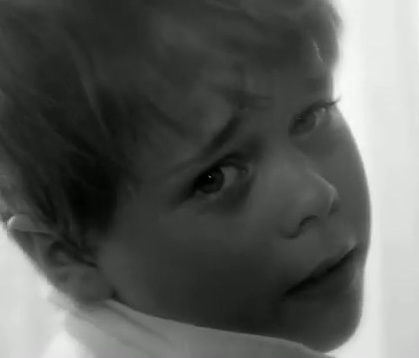

"You're My Girl" Credits
VIDEO CREDITS
Jerome - Joshua Kai
Mama - Lauren Flans
The Father - Michael Wells
Directed and Edited by Ben Waters
Shot by Fred Schroeder
Produced by Laura Boersma, Ben Waters, and Lauren Ludwig
Production Design by Maria Dirolf
Costumes by Joy Kai and Lauren Flans
Photographs by Lisa Mae Scruggs
VERY Special Thanks to Jason Cohen and Justin Charlebois!
SONG CREDITS
Composed by Dylan Ris
Lyrics by Frank Smith, Ryan Harrison, and Dylan Ris
Performed by Michael Wells feat. Lauren Flans
Guitar - Dylan Ris
Keyboard - Rich Ramberg
Bass - Brenton Kossak
Drums - Nicole Marcus
Produced by Dave McKeever
Mixed by Dave McKeever and Dylan Ris